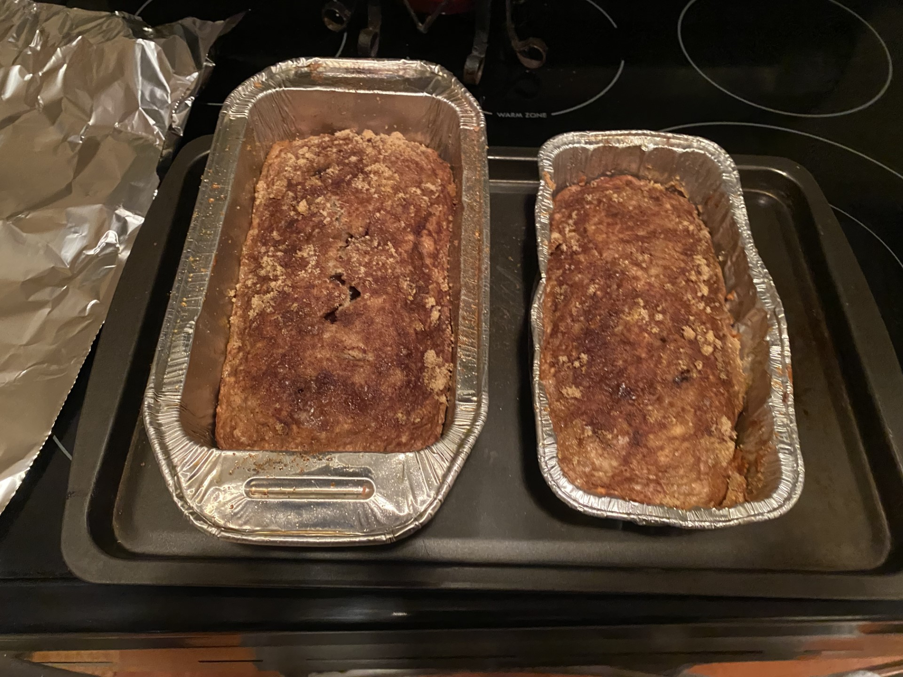

I choose to make banana bread for my last cooking experience because even though this is technically baking this is one of my favorite things to make.
I have made this a decent amount of times before so it was very easy to make.
I usually follow this recipe when I make banana bread and I like baking better than cooking so I found making this recipe to be the most enjoyable to make.